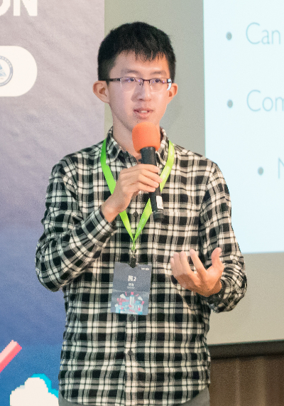

<link rel="import" href="../../bower_components/polymer/polymer-element.html">
<link rel="import" href="../../bower_components/iron-flex-layout/iron-flex-layout-classes.html">
<link rel="import" href="../../bower_components/iron-icon/iron-icon.html">
<link rel="import" href="../../bower_components/iron-icons/communication-icons.html">
<link rel="import" href="../../bower_components/paper-button/paper-button.html">
<link rel="import" href="../../bower_components/paper-styles/color.html">
<link rel="import" href="../../bower_components/paper-dialog/paper-dialog.html">

<dom-module id="profile-page">
  <template>
    <style include="iron-flex iron-flex-alignment">
      :host {
        display: block;
        max-width: 70%;
      }

      p span {
        font-size: 1.4em;
        font-weight: 300;
        line-height: 1.4;
      }

      paper-button#contact {
        background-color: var(--paper-blue-700);
        color: white;
        font-size: 1.1em;
      }
    </style>

    <div class="layout horizontal start">
      
      <p style="margin-left: 3%;">
        <span>Min-Yih Hsu (Bekket McClane)</span>
        <br/><br />
        <span>
          Research Assistant in Department of Computer Science, National Tsing-Hua University, Hsinchu, Taiwan
        </span>
        <br /><br/>
        <paper-button id="contact" raised
          on-tap="_onContactInfoClick">
          <iron-icon icon="communication:mail-outline"></iron-icon>
          &nbspContact Info
        </paper-button>
        <br /><br/>
        <br /><br/>
        <span>
          I have been studying for the bachelor program of computer science at National Tsing Hua University since 2014. I'm currently a research assistant in Programming Language Lab, Department of Computer Science, National Tsing Hua University, Taiwan. Advised by Prof. Jenq-Kuen Lee. I show great interests in embedded system and compiler design. My research work includes extending LLVM for OpenCL 2.0 flow on GPGPUSim, participating in the proposal writeup with a new DSP feature set for on-going Khronos OpenCL 3 on DSP Systems (It includes fixed-point feature sets, complex type, and DSP performance feature set), and devising the reference design in extending khronos OpenCL 2.2 and SPIR-V to accommodate OpenCL 3 with DSP fixed-point feature Set.
        </span>
      </p>
    </div>

  </template>
  <script>
    /*
     * @customElement
     * @polymer
     */
    class ProfilePage extends Polymer.Element {
      static get is() { return 'profile-page'; }

      _onContactInfoClick() {
        this.dispatchEvent(new CustomEvent('show-contact'));
      }
    }

    window.customElements.define(ProfilePage.is, ProfilePage);
  </script>
</dom-module>